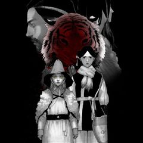
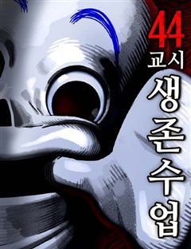
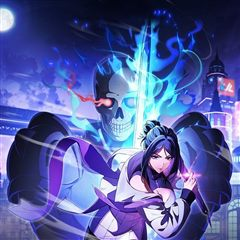
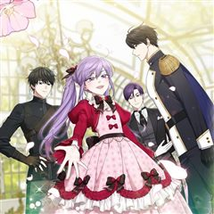
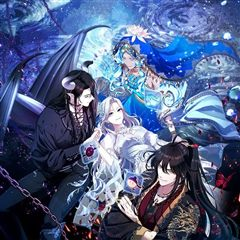
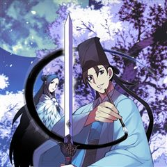

스릴러·공포 미스터리·서스펜스 웹툰 추천 TOP 30
스릴러·공포 작품 중에서 미스터리, 서스펜스, 두뇌싸움, 로맨스릴러 같은 요소가 들어간 작품만 골랐어요. 네이버웹툰·카카오웹툰·레진코믹스에서 조건에 맞는 작품 242개 중 인기 순으로 30개를 골랐어요. 인기 TOP 3: 백작가의 망나니가 되었다, 악역의 엔딩은 죽음뿐, 똑 닮은 딸
2026-09-30 기준 · 성인 작품 제외
내 취향으로 더 좁혀서 추천받기 →-
1
 카카오웹툰
카카오웹툰백작가의 망나니가 되었다
눈을 떠보니 소설 속이었다. 그것도 망나니로 유명한 백작가의 도련님 몸으로…. 그리고, 소설 속에서 나를 박살 냈던 막강한 주인공 최한이 곧 여기로 온다.
스릴러·공포미스터리빙의카카오웹툰에서 보기 → -
2
 카카오웹툰
카카오웹툰악역의 엔딩은 죽음뿐
역하렘 공략 게임의 악역, 에카르트 공작가의 하나뿐인 공녀이자 입양아 페넬로페로 빙의했다. 그런데 하필 난이도는 극악! 뭘 해도 엔딩은 죽음뿐! ‘진짜 공녀’가 나타나기 전에 여주의 어장 중 한 명을 공략해서 살아남아야 한다. 사사건건 시비를 거는 오빠 1, 2. 모든 루트가 죽음으로…
스릴러·공포서스펜스자극적인로판빙의카카오웹툰에서 보기 → -
3
 네이버웹툰
네이버웹툰똑 닮은 딸
'우리 엄마가 살인마인 것 같다.' 성적 우수, 품행 단정, 모범적인 자식인 길소명은 엄마가 요구하는 기준에 맞춰 완벽한 딸로 살아왔다. 그러나 남동생이 강물에서 시체로 떠오른 그 날, 소명의 머릿속엔 섬뜩한 의혹이 피어오른다. 자식의 인생에 방해되는 모든 것을 없애려는 엄마와 그녀에…
스릴러·공포미스터리서스펜스입시명작네이버웹툰에서 보기 → -
4

카카오웹툰냉혈
’1242년 몽골군의 진격을 멈췄던 건 인간이 아니었다.’ 동유럽을 휩쓸며 피바람을 일으키던 몽골군. 그들의 발길이 닿는 곳은 폐허만이 남는다. 그렇게 수많은 희생자들이 흘린 피로 인해 전혀 예상하지 못한 존재가 깨어나고 마는데…… 다급해진 몽골군 총사령관 수부타이는 사냥꾼 부대를 만…
스릴러·공포서스펜스전쟁카카오웹툰에서 보기 → -
5
 네이버웹툰
네이버웹툰1초
구조율 100%의 전설적인 소방관. 그의 특별한 능력은 긴장하는 순간, 미래가 보인다는 것! 촌각을 다투는 진짜 소방관들의 이야기
스릴러·공포서스펜스눈물샘자극현대이능력네이버웹툰에서 보기 → -
6
 카카오웹툰
카카오웹툰무한의 마법사
마굿간에 버려져 평민으로 키워진 아이, 시로네. 타고난 통찰력으로 글까지 깨우친 아이는 도시로 나간 어느 날 그토록 궁금해하던 마법을 경험한다. 그 길로 마법사를 꿈꾸게 된 시로네. 하지만 신분의 장벽이 두터운 이 곳은 아이에게 냉혹하고, 그는 채 어른이 되기도 전에 이 세상의 이면을…
스릴러·공포미스터리학원물성장물카카오웹툰에서 보기 → -
7
 카카오웹툰
카카오웹툰로그인 무림
세상의 경계인 게이트에서 몬스터 사냥을 하는 헌터들이 잘 먹고 잘 사는 시대. 주인공 진태경은 최하위 헌터라 벌이가 시원찮다. 어느 날, 낡은 VR 게임기를 줍게 되고 접속하니 무림의 세계가 펼쳐진다. 우여곡절 끝에 현실로 돌아온 태경은 무림에서 얻었던 힘이 현실에서도 그대로 남아있음…
스릴러·공포서스펜스개그액션게임판타지카카오웹툰에서 보기 → -
8
 카카오웹툰
카카오웹툰점괘보는 공녀님
귀신 보는 능력을 가진 탑배우 이시아. 사고 후 '카밀라 소르펠'의 몸에서 눈을 뜬다. 문제는 말이지. "아, 아버지! 살려 주세요!" 이 여자의 끝이 매번 죽음이라는 것! 목숨줄 늘리는 게 우선이니, 일단 여기 터줏대감 귀신들과 대화부터 좀 해 볼까? 어라, 근데 왜 피하고 싶은 사…
스릴러·공포미스터리로판환생카카오웹툰에서 보기 → -
9
 카카오웹툰
카카오웹툰갓 오브 블랙필드
"Who am I?" 프랑스 외인부대의 전설 '강찬'! 아프리카 전장에서 그를 상대한 자들은 공포와 경외를 담아 '갓 오브 블랙필드' 검은 땅의 신이라 불렀다. 하지만 수니파 추종 세력 SISS의 수뇌인 마살란 사살 작전에 투입된 강찬은 배후에서 날아든 의문의 총알에 전사하게 되고,…
스릴러·공포서스펜스액션전쟁카카오웹툰에서 보기 → -
10

네이버웹툰44교시 생존수업
갑자기 세상에 ‘검은 원’이라 불리는 구멍들이 생겨나기 시작했다. 검은 원은 미스테리 그 자체. 생긴 원인도, 내부에 뭐가 있는 지도 밝힐 수 없었다. 그저 지금까지 검은 원에 빠진 후 돌아온 사람이 단 한 명도 없다는 걸 빼고. 어느 날 주인공 도윤의 학교에도 검은 원이 생겨났다.…
스릴러·공포서스펜스두뇌싸움비쥬얼쇼크학원액션네이버웹툰에서 보기 → -
11
 카카오웹툰
카카오웹툰BLOCK
"나는 해결사다. 그리고 오늘... 첫 임무를 시작한다." 킬러가 되기 위해 휴학까지 한 주시영, 드디어 역사적인 데뷔....!를 하려 하는데 동네 사람들이 전부 미친 거 같다. 이 동네 왜 이래? 이러다 나도 미치는 거 아냐...?!
스릴러·공포미스터리느와르카카오웹툰에서 보기 → -
12
 카카오웹툰
카카오웹툰악당들에게 키워지는 중입니다
즐겨보던 로판 소설의 엑스트라 소녀로 빙의한 지 1년 만에 내가 곧 쫓겨날 신세라는 걸 알게 됐다. 차라리 내 발로 집을 나가겠다고 했더니, “사실은 이 아이가 내 따님입니다. 그렇지, 따님?” 사이코패스 망나니 공자의 눈에 들어 버렸다? ‘놀이 후에 상대한테 준 돈이 섬 하나를 살…
스릴러·공포미스터리로판육아물카카오웹툰에서 보기 → -
13
 카카오웹툰
카카오웹툰내가 버린 개에게 물렸을 때
윈터 공작가에선 개를 기른다. 주인에게 늘 순종하는 검은 개를.. 윈터가의 공녀, 이블린 윈터. 자신만을 따르던 개, 길라스 블랙을 잔인하게 내쫓는다. “저를 사랑하신다고 하시지 않았습니까.” “사랑? 그 말을 믿었어? 버러지 같은 게 주제도 모르고..” ”이 순간을 후회하시게 될 겁…
스릴러·공포미스터리자극적인로판고자극로맨스카카오웹툰에서 보기 → -
14
 카카오웹툰
카카오웹툰만렙 플레이어의 100번째 회귀
전세계적으로 15세부터 29세는 무조건 참가해야 하는 총 20라운드의 데스게임. 이 게임에 회귀특성으로 100번째 도전을 시작하게 된 주인공이 99번의 경험으로 얻은 정보를 이용해 남들보다 압도적으로 강해지는 사이다물. 마지막 라운드의 조건이 최소 5명인 걸 깨닫고, 실패를 반복하지…
스릴러·공포미스터리학원물성장물카카오웹툰에서 보기 → -
15
 카카오웹툰
카카오웹툰누군가 내 몸에 빙의했다
본 작품은 가상의 세계관 및 허구의 인물을 다루고 있습니다. 또한 가상의 세계이므로 현대 한국과 풍습/시대상이 다르니 감상에 참고 부탁드립니다. *작품 내 등장하는 한의학 지식은 소설에 맞추어 재구성, 각색되었습니다* -------------------------------------…
스릴러·공포서스펜스로판고자극드라마카카오웹툰에서 보기 → -
16
 카카오웹툰
카카오웹툰재활용 머학생
'쓰레기 머학생'이었던 수레기, 의대생이 되어 돌아왔다. 제멋대로 대학생활을 보내며 전공이었던 수학을 잔뜩 싫어했던 수레기는 졸업 후 수능을 다시 보고 의대에 합격한다. 늦은 나이에 다시 신입생이 되어 시작하는 두 번째 대학생활! 이번에는 이전처럼 심각한 아싸처럼 살지도, 공부도 던지…
스릴러·공포미스터리개그청춘카카오웹툰에서 보기 → -
17카카오웹툰
천재 궁수의 스트리밍
선수권 대회 최연소 우승자. 그러나 비운의 사고로 몰락한 천재 양궁 선수 유상현! 먹고살기 위해 게임 스트리머, 아몬드가 되는데…. [활을 선택하셨습니다.] 피융! 푸욱! "…보스 원래 한 방이에요?" [엄마! 나는 커서 아몬드가 될래요!] [이게 조선의 활이다ㅋㅋㅋㅋ] 미친 재능이…
스릴러·공포서스펜스학원물카카오웹툰에서 보기 → -
18카카오웹툰
괴담에 떨어져도 출근을 해야 하는구나
[ ⚠️ 해당 작품에는 공포 연출 및 폭력적·잔혹한 장면이 포함되어 있습니다. 이용에 참고 부탁드립니다. ] 소중한 연차까지 내고 갈 정도로 좋아하던 '어떤 현대판타지' 팝업 이벤트. 그리고 그날, 그 현판 속으로 빙의당했다. 무려 유명 대기업에 막 취직한 신입사원으로! 복지 좋고 연…
스릴러·공포미스터리카카오웹툰에서 보기 → -
19
 네이버웹툰
네이버웹툰귀촌리
평범한 시골 마을 '귀촌리'를 찾은 '허무명'. 그는 돌아가신 할머니의 빈 집에 조용히 숨어든다. 그런데 집이 이상하리만큼 깔끔하다. 할머니가 돌아가신 건 3년 전인데? 어쩐지 마을 사람들은 이방인 무명의 방문을 달가워 하는 것 같지 않다. 아니, 실은 경계하는 것 같다. 그리고 그…
스릴러·공포서스펜스두뇌싸움고자극스릴러자극적인네이버웹툰에서 보기 → -
20
 네이버웹툰
네이버웹툰미래의 골동품 가게
남해의 먼 섬에 살고 있는 소녀, '미래'. 미래의 부모님이 바다에서 돌아오지 못한 그날부터, 모든 것들이 변하기 시작했다. 저주를 풀기 위한 단 한 가지의 방법. 소중한 것들을 지키기 위한 기묘한 소녀의 퇴마가 시작된다.
스릴러·공포서스펜스오컬트판타지시리어스현대네이버웹툰에서 보기 → -
21
 네이버웹툰
네이버웹툰치즈인더트랩
평범한 여대생 홍설, 그리고 어딘가 수상한 선배 유정. 미묘한 관계의 이들이 펼쳐나가는 이야기.
스릴러·공포로맨스릴러몰아보기명작드라마&영화 원작웹툰네이버웹툰에서 보기 → -
22카카오웹툰
레벨업 못하는 플레이어
18세의 나이에 '플레이어'로 각성한 김기규. '탑'을 오르고 '게이트'를 닫으며 인생이 탄탄대로일 줄 알았는데... 튜토리얼을 아무리 클리어해도 레벨1. 1일 1고블린을 해도 레벨1. 5년이 지나도 레벨1. "누가 알았겠냐고, 이런 플레이어가 있는지." 그 누구도 몰랐다. 탑을 뒤흔…
스릴러·공포서스펜스액션게임판타지카카오웹툰에서 보기 → -
23

카카오웹툰해골병사는 던전을 지키지 못했다
나는 ‘해골병사’. 주인인 서큐버스님을 용사로부터 지키지 못하고 그저 하찮게 부서져 버린 일개 몬스터. 그렇게 죽음을 맞이하는 줄 알았다. 그러나 정신을 차려보니, 20년 전 사령술사에 의해 눈을 뜬 그 날로 돌아왔다. ‘띠링!’ 남들에게는 보이지 않는 상태창과 함께, 죽어도 죽어도…
스릴러·공포미스터리서스펜스학원물게임판타지카카오웹툰에서 보기 → -
24

카카오웹툰입양딸 역할을 지나치게 잘해버렸다
책 속에 처음 들어왔을 때 나는 그냥 살아남는 것이 목표였다. 최대한 가늘고! 길고! 행복하게! 그래서 아등바등 최선을 다해 살았다. 슬슬 독립해서 꽃길을 걸어보려 했는데. “어딜 가더라도 주인님 옆자리는 내 거예요. 평생 내 머리 쓰다듬어주기로 약속했잖아. 그렇지요?” 원작에서는 내…
스릴러·공포미스터리로판빙의카카오웹툰에서 보기 → -
25

카카오웹툰S급 헌터는 악역 공녀가 되기 싫습니다
김이영, 그녀는 대한민국의 평범한 공무원 시험 응시생이었다. 그것도 4년 반이 넘는 긴 시간동안 공부 끝에 합격한, 낙이라고는 짬짬이 소설읽는 것밖에 없는 정말 평범한 사람. 그러나 합격을 축하하기 위해 외식을 나간 날 교통사고를 당해 죽고, 자신이 읽던 현태판타지 헌터물에 빙의하고…
스릴러·공포서스펜스로판빙의카카오웹툰에서 보기 → -
26카카오웹툰
악당만 취급합니다
‘내 직업은 치료사가 아니란 말이다!’ 2년 전. 집 앞에 쓰러진 환자를 치료하고 나서부터 환자들이 줄줄이 쌓인다. 불법 보석 세공사이자 보석술사인 시링크스는 이번에도 자신의 문 앞에 널브러진 환자를 확인하는데... 이 남자는... 소설 속 최고의 악당? 전생에 읽었던 소설 속으로 환…
스릴러·공포서스펜스로판하렘카카오웹툰에서 보기 → -
27카카오웹툰
남편의 말대로 정부를 들였다
' “기억하지 루이제? 내 사생활에 참견하는 순간 이 결혼은 끝이야. 그걸 받아들인 건 당신이고.” 결혼 기간 약 3년. 끊이지 않고 바람을 피우는 남편에게 지친 어느 날, 남편이 정부를 들이라고 했다. 그의 말대로 정부를 구해보려고 뒷골목에서 가장 유명한 지골로를 찾아오긴 했는데………
스릴러·공포서스펜스로판고자극로맨스카카오웹툰에서 보기 → -
28
 네이버웹툰
네이버웹툰원주민 공포만화
끝날 때까지 끝난 것이 아니다! 마지막까지 방심할 수 없는 다양한 에피소드. 당신의 상상을 뛰어넘는 본격 반전 공포 스릴러가 온다!
스릴러·공포서스펜스오컬트판타지병맛개그네이버웹툰에서 보기 → -
29
 카카오웹툰
카카오웹툰신인인데 천만배우
계부 밑에서 어렵게 유년시절을 보낸 무영. 그에겐 삶이 지옥과도 같았다. 살아 있는 지옥에서 살 길을 알려준, 신비스러운 한 목소리. “네 인생 대신 다른 누군가의 인생을 살아." 그렇게 시작한 연기였는데…… 생존 본능과도 같은 것이었을까. 잘해도, 너무 잘한다. 연기를 통해 새 삶은…
스릴러·공포미스터리성장물카카오웹툰에서 보기 → -
30

카카오웹툰학사검전
장원에 급제하여 입궁한 학사 운현. 황태자의 취미생활을 전담하는 초라하고 처량한 신세를 한탄하지만, 그럼에도 포기하지 않고 최선을 다해 무공을 익힌다. 그러던 운현은 갑자기 무림을 제패하기 위해 붓을 드는데?! 젊은 나이에 장원에 급제한 학사의 숨겨진 이야기가 시작된다.
스릴러·공포미스터리액션직업드라마카카오웹툰에서 보기 →